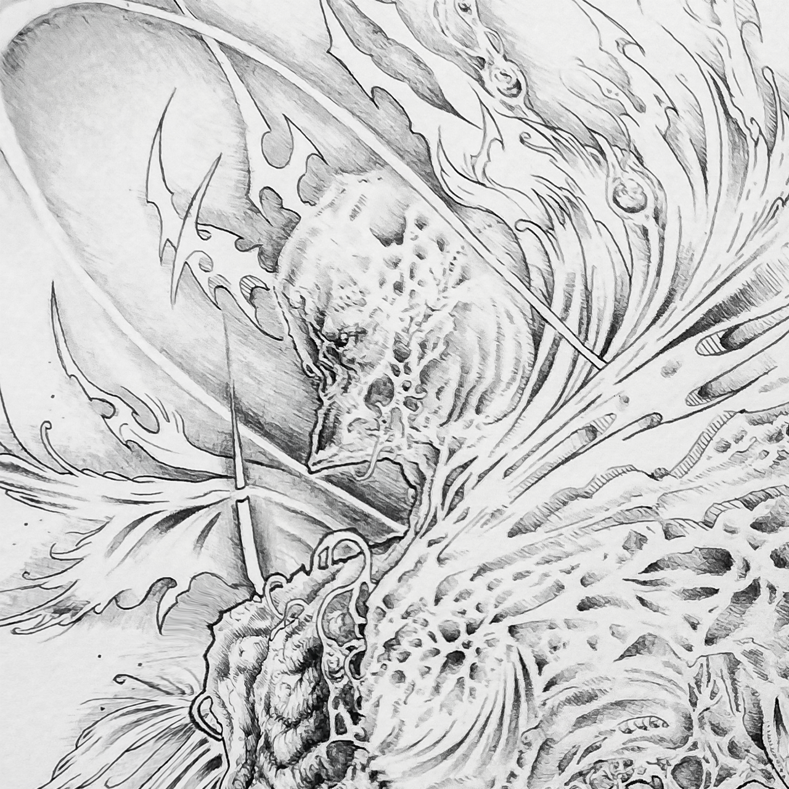
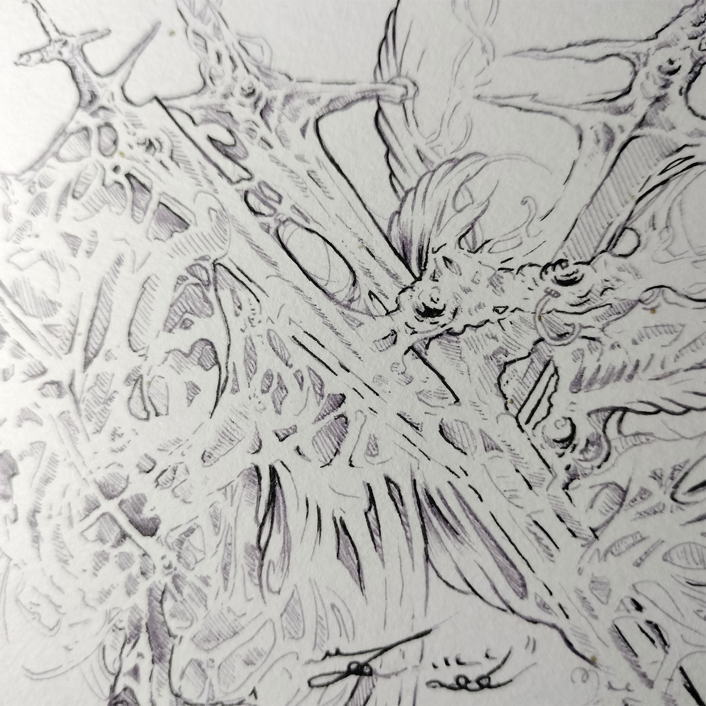
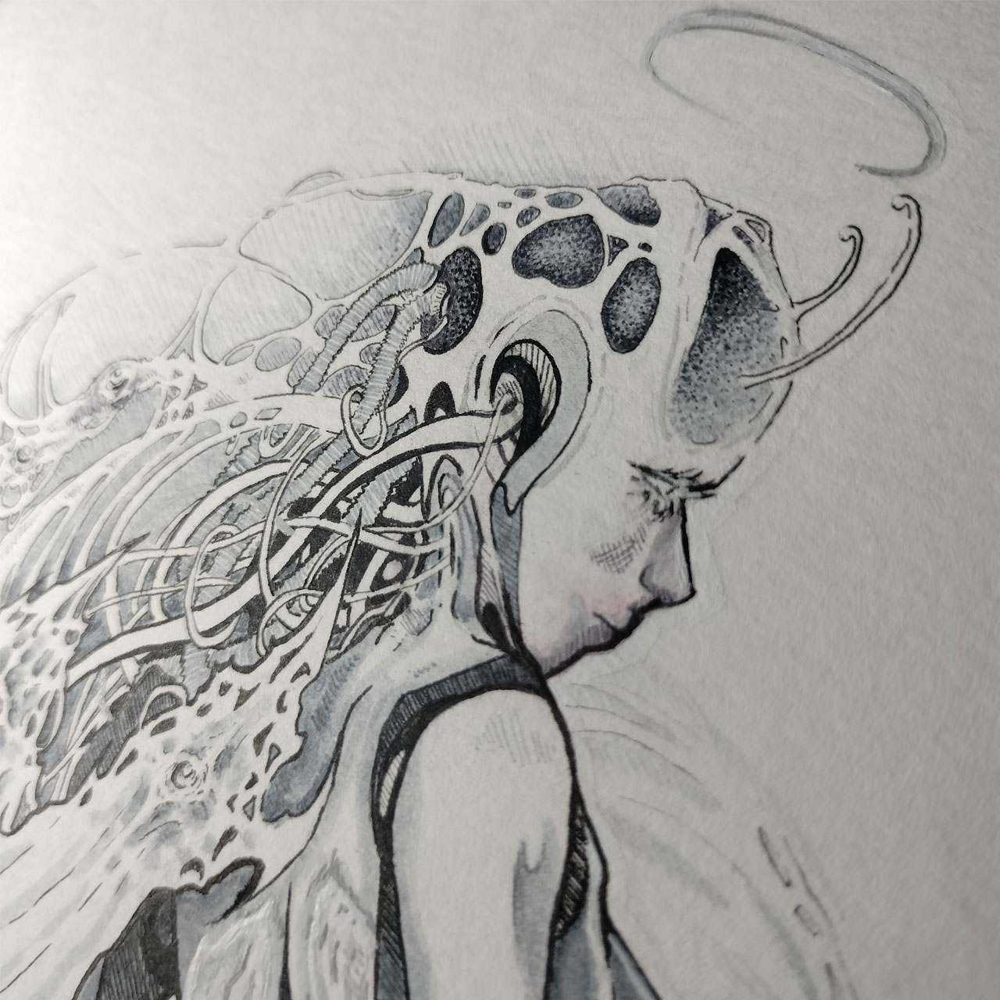
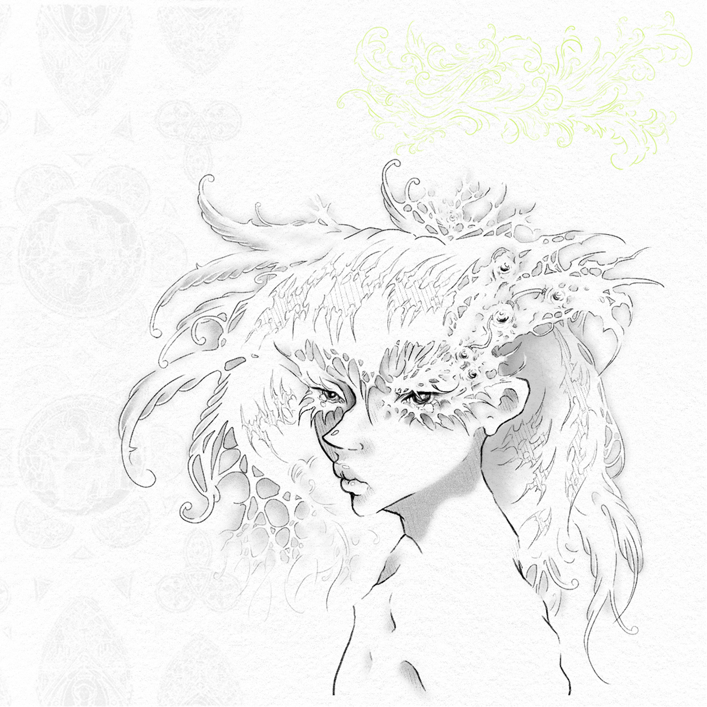

Ink Render
Un espacio para previsualizar y preparar tus tatuajes, directamente en el navegador.
Simulador 3 D
Coloca tus diseños sobre un cuerpo en tres dimensiones para ver cómo se adaptan a la anatomía antes de tatuar.
Abrir simuladorStencil
Limpia el fondo de cualquier imagen y conviértela al instante en líneas de contorno listas para transferir.
Abrir stencilVídeo de demostración
Galería
_
❐
X



